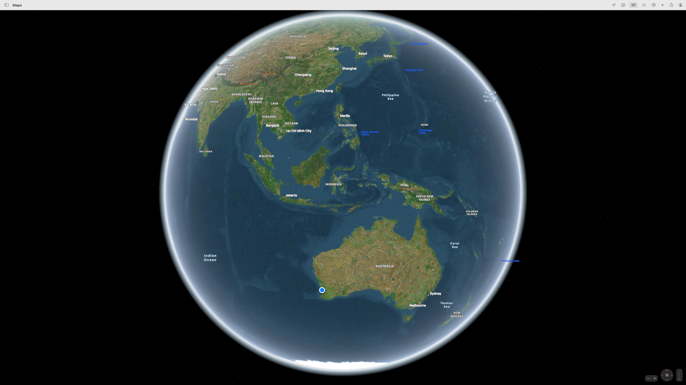
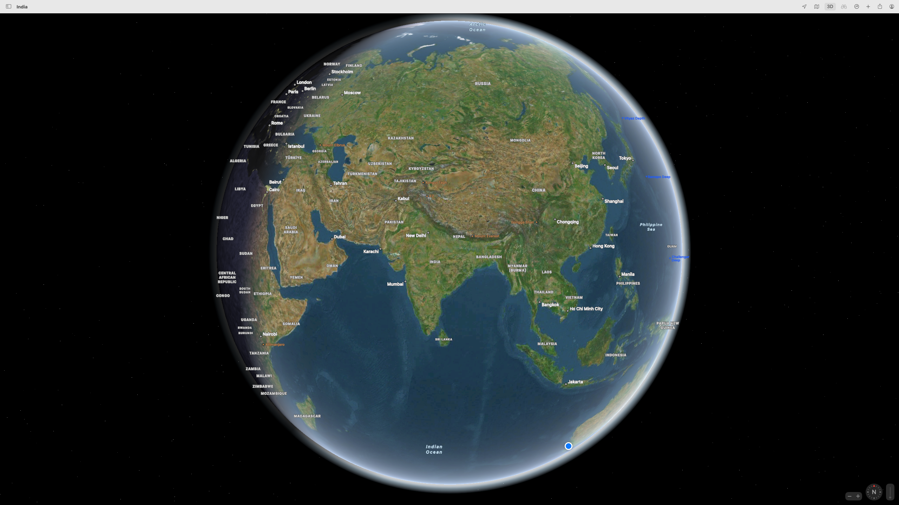

2023.10.01 20:05:03
Project Start
23.09.02Started with download and install of Flight Gear23.09.02-07Learned/remembered how to fly on the following week23.09.10First world trip plan started
2023.10.01 20:07:21
Resources
- Flight Gear User Portal
- Great Circle Mapper
- SkyVector
- FltPlan flight plans. How to create one.
2023.10.01 20:10:24
Flight plan
1. Australia, Oceania and East Asia
 - Perth to Alice Springs - ~~Cairns, Port Moresby, Jayapura, Manila, Taipei~~ - Darwin, Timor, Denpasar, Jakarta, Kuala Lumpur, Bangkok, Hanoi, Macau/Guangzhou/Hong Kong, Taipei - Shanghai, Beijing, Seoul, Osaka, Nagoya, Tokyo
2. South Asia to Asia Minor
